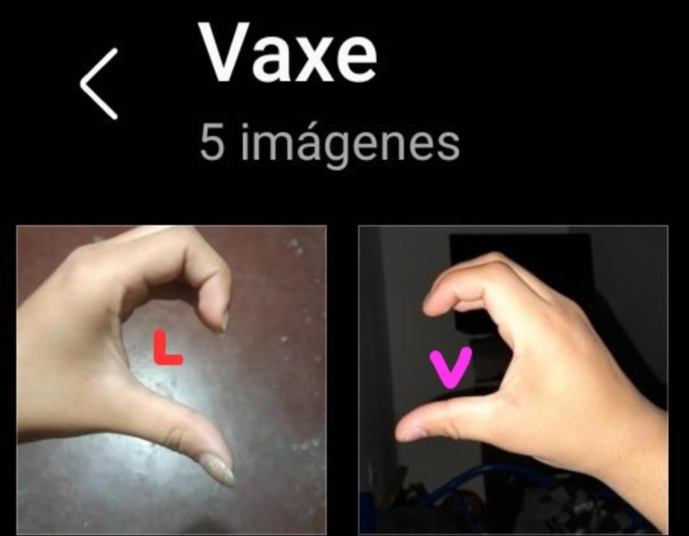

Eh aquí la novia, La princesa, la niña de la relación

Espero que disfrutes de este regalo que nos hice a nosotros, nuestra historia en un lugar donde siempre podamos leer, recordar, espero que te guste Amor.
Con Amor: Tu Novio.
Nuestra historia empieza en cierto viaje, en cierto bar, donde nos conocimos y ahí nació esto
Eh aquí la novia, La princesa, la niña de la relación
El Novio

Corajon

Hola amor, Mucho tiempo desde que estuviste aca ¿No?
un tiempo desde que te escribi lo que sentia, a pasado mucho tiempo desde la mayoria de cosas, desde nuestro ultimo beso, ultimo abrazo, asi que te quiero dedicar estas palabras, para que aun en la distancia sepas que Te Amo
Hemos estado ya un tiempo juntos amor, en ese tiempo e podido ver la mayoria de tus sentimientos, forma de ser,hasta de lo mas pequeño aprendi de vos
definitavamente no me arrepiento de ser tu novio
Nunca voy a hacerlo, desde que estamos juntos soy Mas feliz mi amor, desde que esta en mi vida solo trajiste cosas buenas
Te amo con el corazon amor, amo como podes ser una niña mimada, caprichosa hasta como podes ser la chica mas fuerte que puede haber
como aun en la peor tratas de ayudar, eso me gusta de vos
es inexplicable lo que me haces sentir, lo que tu simple abrazo me hace sentir, lo que tu sonrisa causa en mi
MI amor, te doy esta carta en este lugar asi aun lejos, puedas confirmar que mi corazon siempre te va a pertenecer
te amo valy
se que no tiene mucho sentido varias palabras, pero se que ninguna es mentira, todo viene de mi corazon, mis sentimientos en palabras, mis emociones en letras
Son mis ganas de estar amandote hasta que no pueda mas lo que me hacen escribir estas palabras
Te amo vale, amor, sos lo que me impulsa aveces, el pensar en vos, en lo que podemos ser, en lo que Ya somos, me da un subidon el ver tus ojos, tu carita, el sentirte
Se que estamos lejos, pero no impide el quererte, tampoco me impide saber que esta Hermosa cada dia
la distancia no impide sentir y esto es lo que siento, estos son mis sentimientos amor : TE AMO VALEE, nunca lo voy a negar, esta pagina esta para que siempre lo sepas, ojala te guste, todo lo hice pensando en vos amor, en mi niña, mi novia, mi peque, mi valy
jaja, de verdad que no podria pedir mas, teniendote a vos, Gracias por amarme, Gracias por ser mi novia, Se que no se agradece el amor, pero necesito agradecer el que seas vos, el que seas vos.
Te quiero Val, Mucho.

Sos ese lugar al que quiero siempre quiero volver, sos eso que me calma, sos mi Mrs snow
Pero nuestro invierno nunca va a terminar, asi que ¿Bailamos?